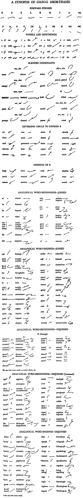

About
Anniversary Gregg Shorthand
Sixth edition
(1929-1948)
In 1929, the sixth edition of Gregg Shorthand
was published. This series, Gregg Shorthand Anniversary, was
much easier than before. No real changes were made in the
basic principles of the system, but it changed according
to the frequency of the words used at the time. No longer
was it necessary to have a quick phrase ready for when someone said
"I am in receipt of your esteemed favor on the 4th inst."
The manual was rearranged from
twenty lessons into twelve chapters, divided by thirty-six units.
The word-signs were now known as brief forms.
Most of the brief forms and prefixes mentioned here
were removed due to lack of frequency. The following synopsis
of Anniversary Gregg Shorthand was in Gregg Speed Building for
Colleges.

Anniversary Gregg Shorthand has 318
Brief forms with 140 Special Forms, which were simply outlines
that one could employ that followed the abbreviation principle.
Though this series was well simplified from
the first and second editions, it still was difficult for the student
due to the moderate memory load. This series was meant mostly
for the well-trained court reporters and could be employed to reach
astronomical speeds for that day.
At the end of this series's run, John Robert
Gregg passed away. Just one year after his death, the Gregg
Publishing Company was no more, having been purchased by McGraw-Hill
around 1949. The Gregg Writer—a magazine published
for secretaries, typists, and stenographers—was deleted as
soon as Anniversary Shorthand became nonstandard by the Gregg division.
It was succeeded by the magazine—which used the seventh
edition of Gregg shorthand, the Simplified Series—Today's
Secretary. |